ABOUT ME
I'm Muhammad Syahrul Nizam, a senior finance student at UiTM Kota Bharu. Despite being an introvert, I thrive on exploring new things, both academically and personally. In finance, I've dedicated myself to mastering complexities and analytical skills. Outside of class, I love trying new experiences, from different cuisines to embracing diverse cultures. An interesting twist is my love for horror and thriller movies, despite being a scaredy-cat. As I approach the end of my senior year, my journey is about balancing introversion with openness to new experiences—a story of growth and passion for life's richness.
MY INTEREST
 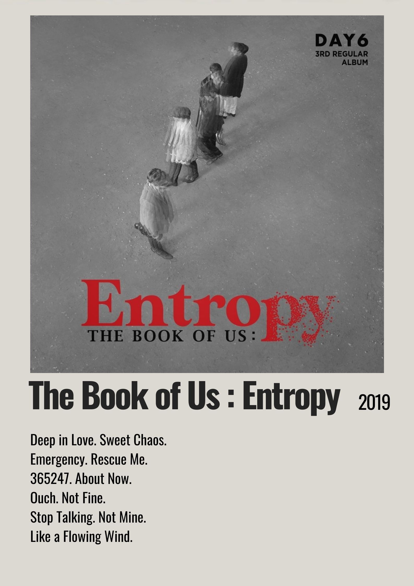
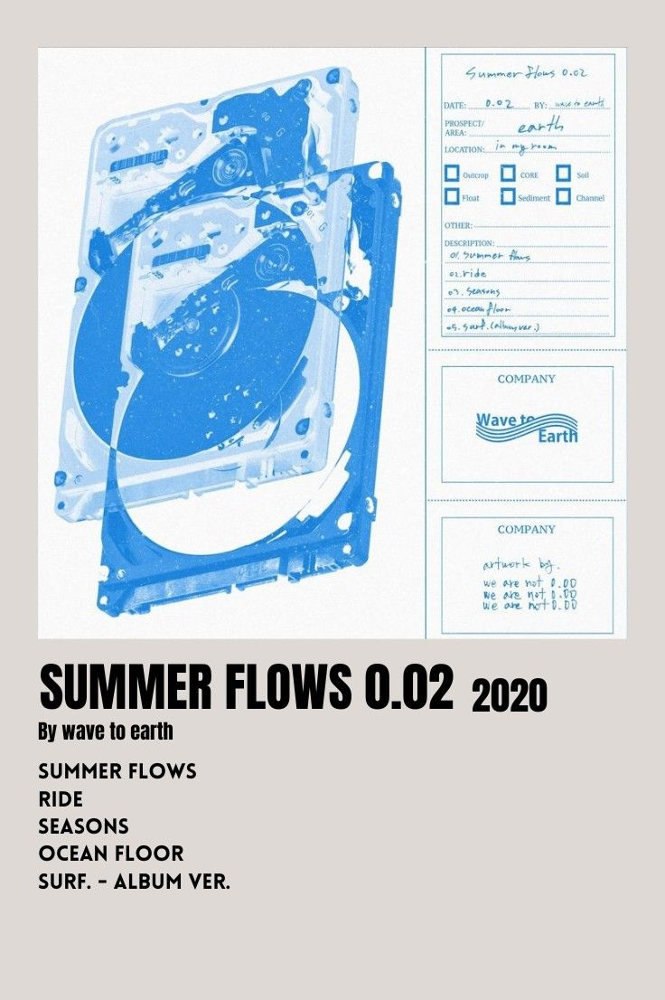
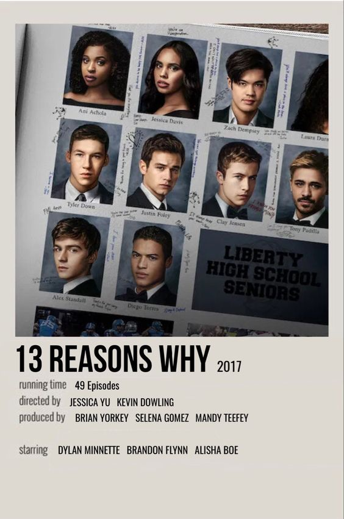
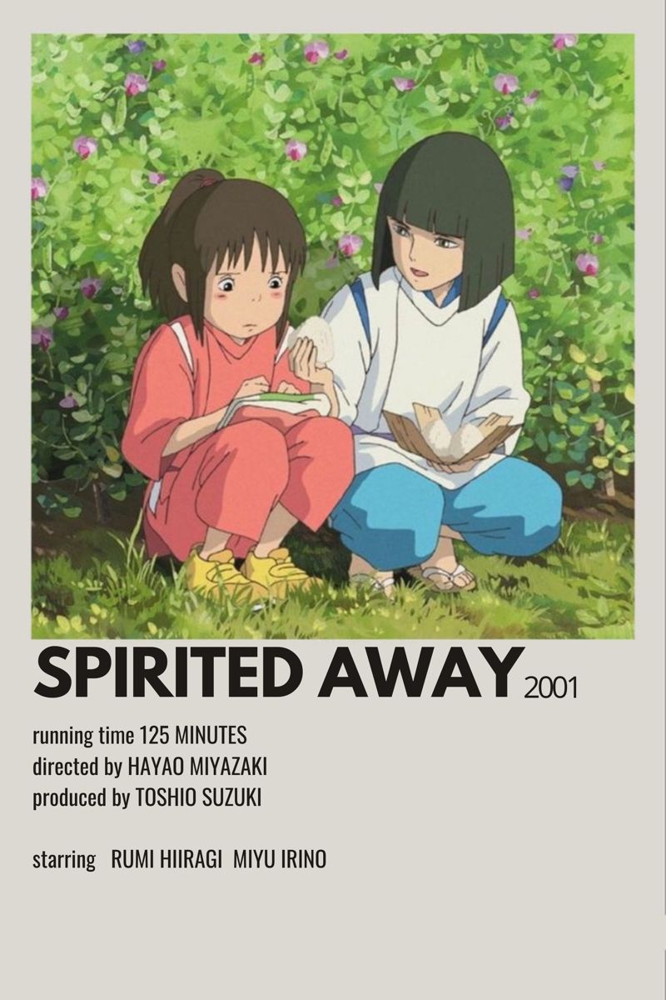
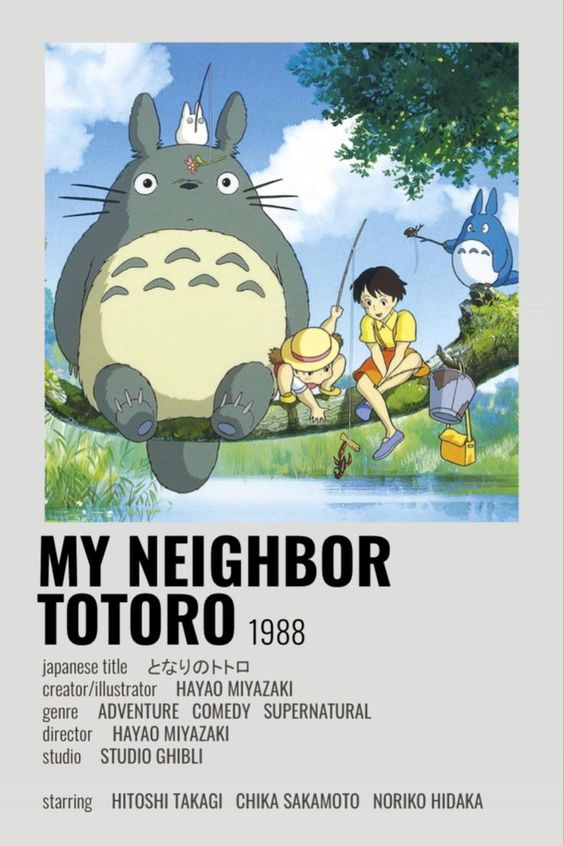
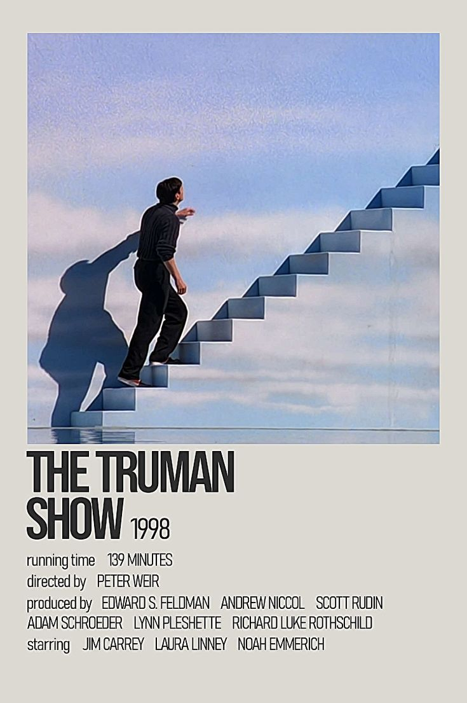
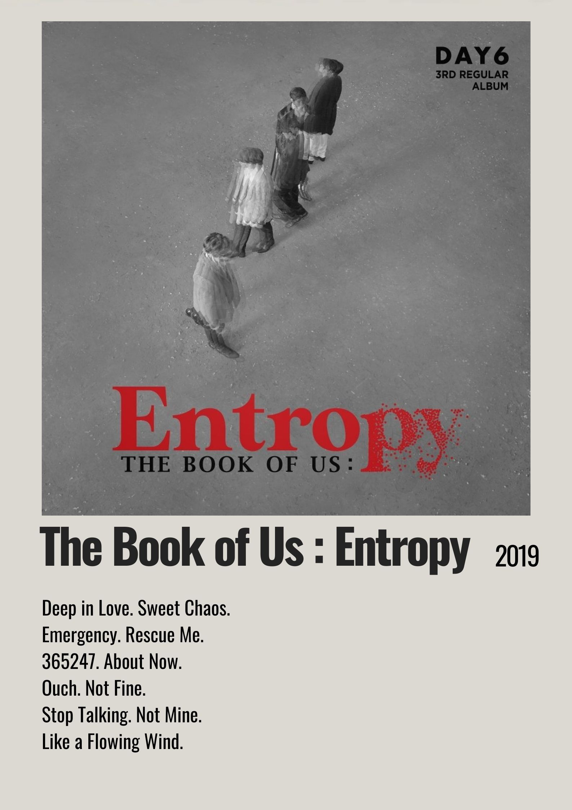
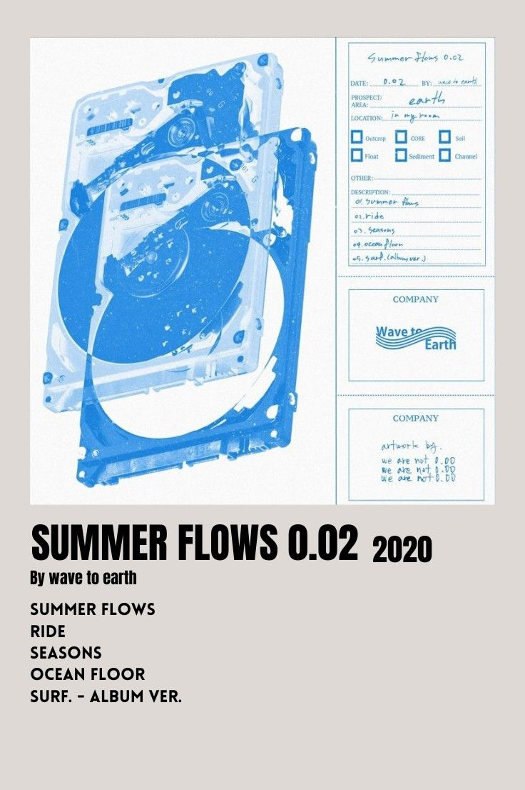
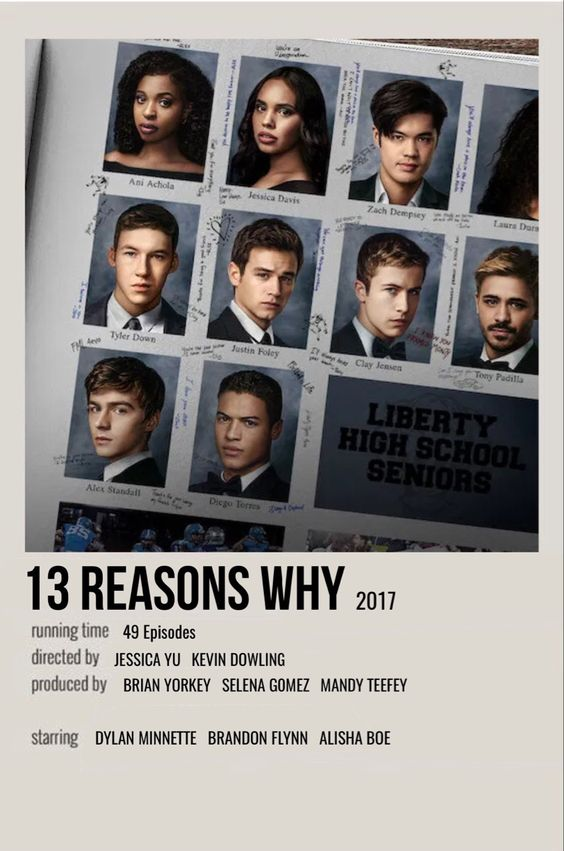
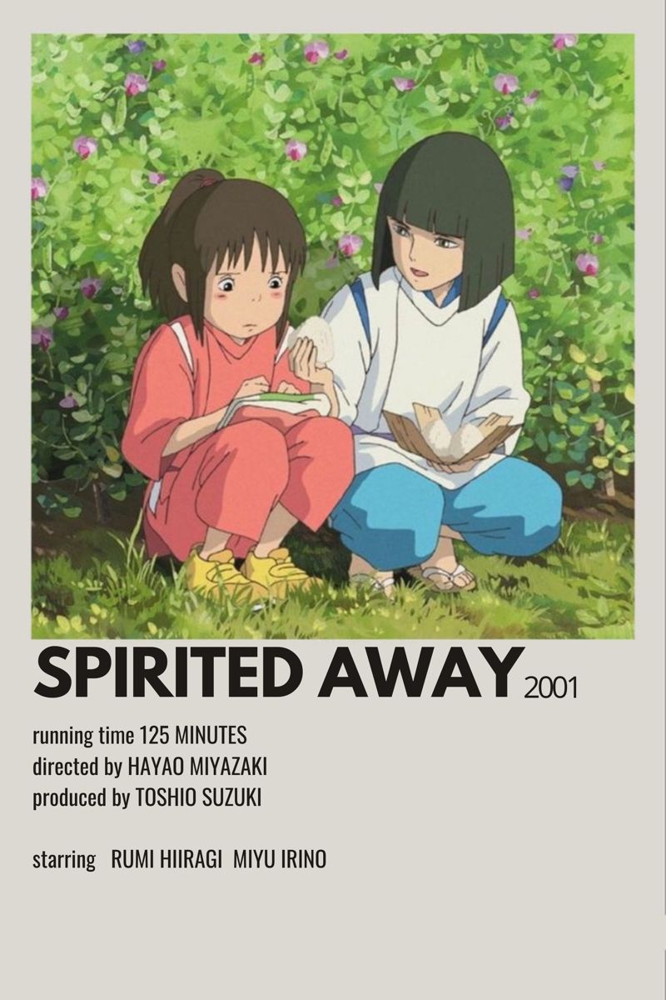
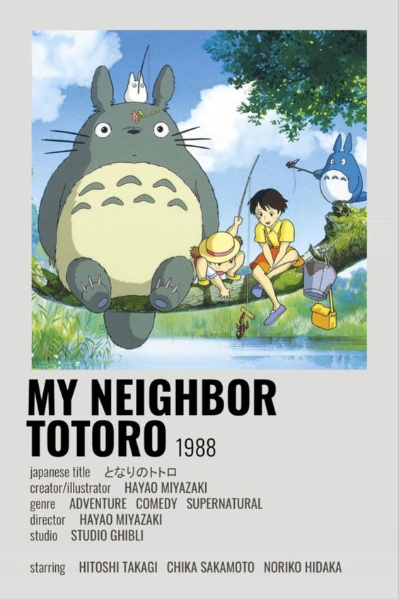
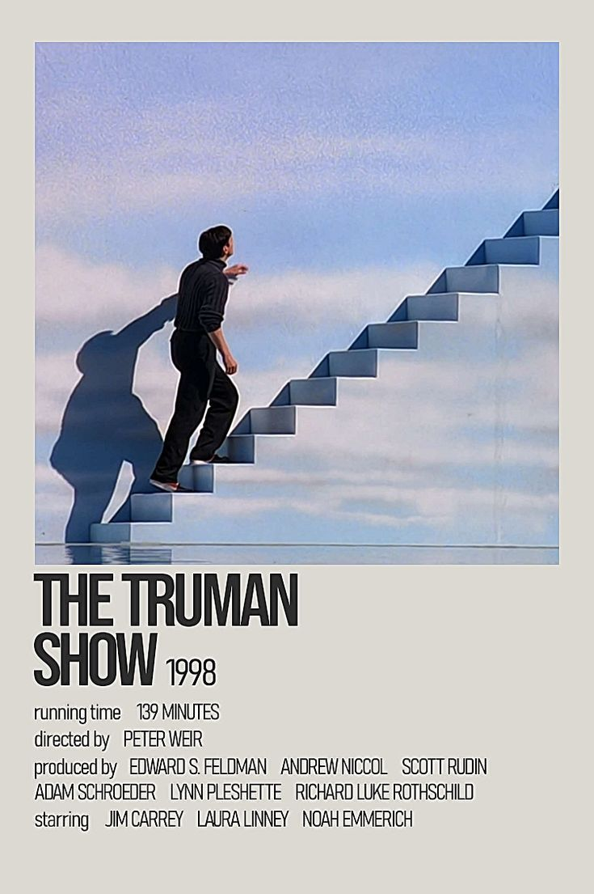
Embarking on a journey through my interests reveals a colorful tapestry that mirrors the diverse landscape of my passions. As an INFJ-A personality, I navigate the world as an introvert, finding comfort in the quiet yet transforming into a happy-go-lucky spirit around those I hold dear. My musical taste mirrors this duality, ranging from the energetic rhythms of K-pop sensations Blackpink and the heartfelt melodies of South Korean boyband Day6 to the soothing sounds of the Wave to Earth band and the introspective tunes of Novo Amor.
Beyond the realm of music, I find enchantment in the magical worlds crafted by Studio Ghibli, with timeless classics like Spirited Away and My Neighbor Totoro holding a special place in my heart. On the screen, series such as 13 Reasons Why and The Truman Show captivate my imagination, providing thought-provoking narratives that resonate with my introspective nature. This convergence of diverse interests creates a rich tapestry that defines my cultural explorations.
Beneath it all lies a burning curiosity and a deep-seated desire to explore new horizons. My dreams extend beyond the familiar, with a fervent aspiration to travel the world and immerse myself in the richness of different cultures. This website serves as a portal into my world, inviting you to explore the facets of my identity shaped by music, anime, series, and an insatiable thirst for discovery.
♫ Yiruma, (이루마) - River Flows in You
Favourite Dream